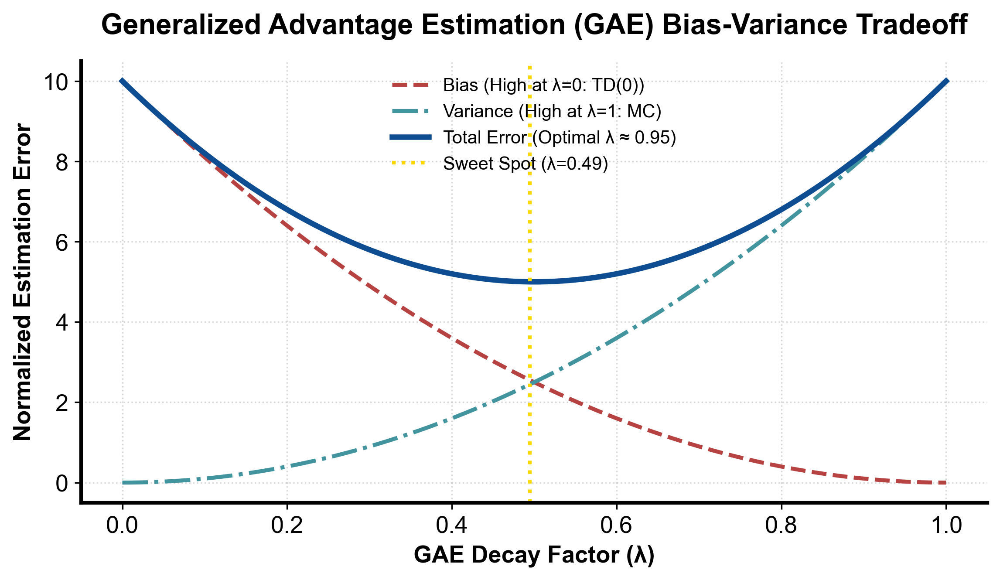

flowchart LR
Last["最后一步: A_T^{GAE} = δ_T"] --> Step["递归计算: A_t = δ_t + γ λ (1 - done_t) A_{t+1}"]
Step --> Norm["全批次标准化: A_t = (A_t - mean) / (std + 1e-8)"]
Norm --> Out["输出高质量优势信号注入策略损失更新"]
第 4 课：GAE 与优势估计
参考答案版：包含完整代码实现与问答题深度参考解析。建议先独立完成练习题后再展开核对。
本课目标与完成标准
学完后你应能：实现带终止 mask 的 GAE 反向递推，并解释 λ 如何连接 TD 与 MC。
通过必须同时满足：
- 独立补齐本课唯一的代码填空题，并通过给定检查；
- 三个问答题均说明因果链，而不是只报术语；
- 能指出至少一个正确性边界和一个性能取舍；
- 总分不低于 8/10，且没有一票否决级概念错误。
前置关系
- 课程前置：Python、概率期望、基本深度学习
- 本课在路线中的作用：GAE 把多个 n-step TD error 以 (γλ)^k 加权，控制优势估计的偏差—方差。
核心心智模型
核心操作与执行流程图解

图 4-1：广义优势估计 GAE(λ) 偏差-方差权衡与最优点曲线（基于 scientific-figure-making 绘制）
图 4-2：GAE 逆序递归高效计算与批量标准化流水线
1. 它是什么，解决什么问题
广义优势估计（Generalized Advantage Estimation, GAE）由 John Schulman 等人于 2015 年提出，是现代 Actor-Critic、PPO 与大模型后训练算法中计算策略优势函数 \(A(s, a)\) 的事实工业标准。 在策略梯度更新 \(\nabla_\theta \mathcal{J} = \mathbb{E}[\nabla_\theta \log \pi_\theta(a \mid s) \cdot A(s, a)]\) 中，优势函数刻画了“在状态 \(s\) 下采取动作 \(a\) 相比于当前策略的平均水平好多少”： \[ A^\pi(s, a) = Q^\pi(s, a) - V^\pi(s) \] 我们在工程上面临的核心困境是方差与偏差的剧烈冲突： - 若用单步 TD 误差估计优势 \(\hat{A}_t^{(1)} = r_t + \gamma V(s_{t+1}) - V(s_t)\)，由于高度依赖价值网络自身的不准确预估，具有高偏差、低方差； - 若用蒙特卡洛全轨迹回报估计优势 \(\hat{A}_t^{(\infty)} = \sum_{k=0}^\infty \gamma^k r_{t+k} - V(s_t)\)，虽然数学期望严格无偏，但由于动作随机性在长时序中累乘发散，具有零偏差、极高方差。
GAE 解决的核心问题是：如何通过超参数 \(\lambda \in [0, 1]\) 构筑连续可控的滑动折中，在单步 TD(0) 与无限步 MC 之间无缝插值，实现方差与偏差在 Pareto 前沿上的最优平衡。如图 4-1 所示，真实环境中总存在一个使全局均方误差（MSE = \(\text{Bias}^2 + \text{Variance}\)）达到极小值的黄金参数区间（通常 \(\lambda \in [0.90, 0.98]\)）。
2. 它如何工作
GAE 的数学推导、状态权衡与逆序执行流水线如图 4-1 与图 4-2 所示：
- 时序差分残差（TD Residual）与多步优势的指数折叠： 定义单步 TD 残差 \(\delta_t^V = r_t + \gamma (1 - d_t) V(s_{t+1}) - V(s_t)\)。 将多步优势展开：
- 1 步优势：\(\hat{A}_t^{(1)} = \delta_t^V\)
- 2 步优势：\(\hat{A}_t^{(2)} = \delta_t^V + \gamma \delta_{t+1}^V = r_t + \gamma r_{t+1} + \gamma^2 V(s_{t+2}) - V(s_t)\)
- \(k\) 步优势：\(\hat{A}_t^{(k)} = \sum_{l=0}^{k-1} \gamma^l \delta_{t+l}^V = \sum_{l=0}^{k-1} \gamma^l r_{t+l} + \gamma^k V(s_{t+k}) - V(s_t)\) GAE(\(\gamma, \lambda\)) 定义为对所有 \(k\)-step 优势估计的几何加权指数衰减平均： \[ \hat{A}_t^{\text{GAE}(\gamma, \lambda)} = (1 - \lambda) \sum_{k=1}^\infty \lambda^{k-1} \hat{A}_t^{(k)} = \sum_{l=0}^\infty (\gamma \lambda)^l \delta_{t+l}^V \]
- 反向递推（Backward Telescoping Recurrence，图 4-2）： 利用几何级数的可递归性，无需展开无限求和，只需自轨迹终点向起点单遍扫描： \[ \hat{A}_t^{\text{GAE}} = \delta_t^V + \gamma \lambda (1 - \text{done}_t) \hat{A}_{t+1}^{\text{GAE}} \]
- 当 \(\lambda = 0\) 时：\(\hat{A}_t = \delta_t^V\)，退化为纯单步 TD 优势估计（方差最小，完全依赖 Critic）；
- 当 \(\lambda = 1\) 时：若轨迹自然完结，中间 \(V(s_{t+l})\) 项发生望远镜级数抵消（Telescoping Sum）： \[ \sum_{l=0}^{T-t-1} \gamma^l [r_{t+l} + \gamma V(s_{t+l+1}) - V(s_{t+l})] = \sum_{l=0}^{T-t-1} \gamma^l r_{t+l} - V(s_t) = G_t - V(s_t) \] 退化为标准的 REINFORCE 蒙特卡洛经验优势估计。
- 批量归一化（Batch Advantage Normalization）： 如图 4-2 所示，在将 GAE 优势输入策略损失前，工程上通常在整个 mini-batch 上计算均值 \(\mu_A\) 与标准差 \(\sigma_A\)，并执行归一化： \[ \tilde{A}_t = \frac{A_t - \mu_A}{\sigma_A + 10^{-8}} \] 这保证了一半动作具有正优势、一半具有负优势，且梯度尺度在不同训练阶段恒定，极大稳定了网络优化。
3. 正确性条件与常见误区
- 终止掩码双通道阻断（Bootstrap Mask vs Carry Mask）： 在反向递归式中，
not_done = 1.0 - float(dones[t])必须同时施加在两处物理关键点：- 自举阻断通道：\(\delta_t = r_t + \gamma \cdot \text{not\_done}_t \cdot V(s_{t+1}) - V(s_t)\)。防止物理终局状态继承虚假的未来价值；
- 累积传递通道（Carry Mask）：\(\text{carry} = \delta_t + \gamma \lambda \cdot \text{not\_done}_t \cdot \text{carry}\)。在密集打包（Packed Sequences）的多轨迹样本中，如果遗漏了累积掩码，下一个 Episode 的优势值将会沿着递归链直接逆向倒灌进上一个已经完结的 Episode 末尾，造成致命的跨轨迹数据污染。
- 截断（Truncation）与终止（Termination）的掩码解耦： 若因超时或步数截断结束，必须保留末状态价值自举（\(V(s_{\text{truncated}})\) 乘入 \(\delta_T\)），但反向扫描到截断边界时，后续累积项必须归零（\(\text{carry} = 0\)）。将二者混淆会导致截断状态附近的优势严重畸变。
- 长度对齐不变量： 给定长度为 \(T\) 的奖励序列
rewards，values数组的长度必须为 \(T + 1\)（包含末状态价值 \(V(s_T)\)）。若直接用长度为 \(T\) 的 values 错位计算，会导致最后一步无法正确自举，甚至触发数组越界。
4. 性能与工程取舍
- \(\lambda\) 的环境依赖敏感度：
- 在环境转移动力学随机性极高（如风向扰动、复杂博弈）且轨迹极长时，选择较小的 \(\lambda\)（如 0.90）有助于隔绝后续大量不可控的随机噪声，保持训练稳定；
- 在物理模拟确定性极高或奖励高度稀疏的推理场景（如数学证明、围棋）中，Critic 在训练初期预测极不准确，选择较大的 \(\lambda\)（如 0.98 或 1.0）能够更多依赖真实终端判题反馈，避免被错误的 Critic 引导带偏。
- 内存局部性与矢量化扫描： GAE 逆序扫描在 Python 纯循环中存在一定的解释器开销。在工业实现中（如 CleanRL / Ray RLlib），通常利用 PyTorch 的 C++ 底层或 Triton/CUDA 自定义算子执行反向融合扫描（Fused Backward Scan），将张量反向遍历时间压缩至微秒级。
具体演示：两步轨迹的 GAE 逆序手工推导
设环境折现因子 \(\gamma = 0.9\)，衰减参数 \(\lambda = 0.95\)。有一条两步轨迹： - 奖励序列：rewards = [1.0, 1.0] - 价值序列：values = [0.5, 0.6, 0.0]（第 2 步为物理终止状态，真实后继价值为 0） - 终止标志：dones = [False, True]
手工推导步骤： 1. 时刻 \(t=1\)（倒数第一步）： - 终止掩码：\(\text{not\_done}_1 = 1.0 - 1.0 = 0.0\)； - 单步残差：\(\delta_1 = r_1 + \gamma \cdot \text{not\_done}_1 \cdot V_2 - V_1 = 1.0 + 0.9 \times 0.0 \times 0.0 - 0.6 = 0.4\)； - 累加优势：\(A_1 = \delta_1 + \gamma \lambda \cdot \text{not\_done}_1 \cdot \text{carry} = 0.4 + 0 = 0.4\)。 2. 时刻 \(t=0\)（倒数第二步）： - 终止掩码：\(\text{not\_done}_0 = 1.0 - 0.0 = 1.0\)； - 单步残差：\(\delta_0 = r_0 + \gamma \cdot \text{not\_done}_0 \cdot V_1 - V_0 = 1.0 + 0.9 \times 1.0 \times 0.6 - 0.5 = 1.04\)； - 累加优势：\(A_0 = \delta_0 + \gamma \lambda \cdot \text{not\_done}_0 \cdot A_1 = 1.04 + (0.9 \times 0.95) \times 1.0 \times 0.4 = 1.04 + 0.342 = 1.382\)。
最终输出优势序列为 \([1.382, 0.4]\)，与代码计算结果完全一致。第二步的残差通过 \(\gamma \lambda\) 衰减通道平滑传递回了第一步。
实践任务：唯一代码填空题
补齐 GAE 中两个 mask 位置。
规则：只能修改 TODO/______ 所在位置；不要删除断言或放宽误差。代码注释说明了每个边界条件。
Code
def gae(rewards, values, dones, gamma, lam):
assert len(values) == len(rewards) + 1
assert len(dones) == len(rewards)
adv = [0.0] * len(rewards)
carry = 0.0
for t in range(len(rewards) - 1, -1, -1):
not_done = 1.0 - float(dones[t])
delta = rewards[t] + gamma * ______ * values[t + 1] - values[t]
carry = delta + gamma * lam * ______ * carry
adv[t] = carry
return adv
got = gae([1., 1.], [0.5, 0.6, 0.0], [False, True], .9, .95)
assert all(abs(a-b) < 1e-9 for a,b in zip(got, [1.382, 0.4]))
# 真正终止不读末状态价值；采样窗口结束仍保留 bootstrap。
assert gae([1.], [0., 5.], [True], .9, .95) == [1.]
assert gae([1.], [0., 5.], [False], .9, .95) == [5.5]
# 两个独立的单步 episode，后一个分数不可泄漏到前一个。
assert gae([1., 100.], [0., 0., 0.], [True, True], 1., 1.) == [1., 100.]
assert gae([0., 1.], [0., 0., 0.], [False, True], 1., 1.) == [1., 1.]
assert gae([], [0.], [], .9, .95) == []检查方法
运行断言，并解释最后一步为何不读取 values[2] 的数值贡献。
提交时请给出：补齐后的代码、实际运行输出（环境不可用时注明“仅静态审查”）以及对失败用例的解释。
Q1
不要背定义：请从输入、状态变化和输出三个阶段解释“GAE 与优势估计”的工作机制。
你的答案：
Q2
只在 δ 上乘 done mask、递推 carry 不乘，会跨 episode 泄漏什么？
你的答案：
Q3
LLM token 级奖励只有末尾一个分数时，GAE 的信用会如何向前传播？
你的答案：
评分与通过规则
- 代码 4 分：正常输入 2 分，边界输入 1 分，解释实现 1 分；
- Q1～Q3 各 2 分；
- 一票否决：结果碰巧正确但核心因果链错误、删除边界检查、把未运行结果说成实测。
需要提示时按四级机制请求：概念区域 → 具体方向 → 关键局部 → 完整答案。